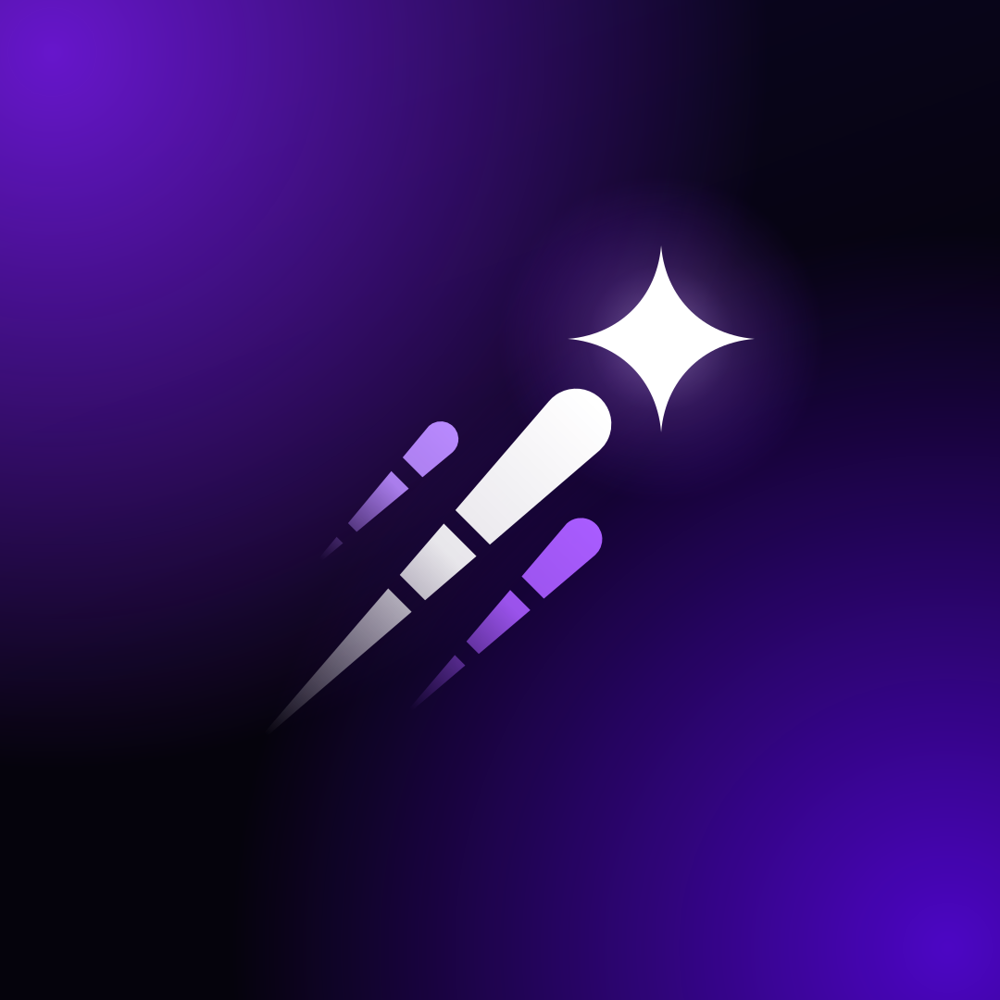
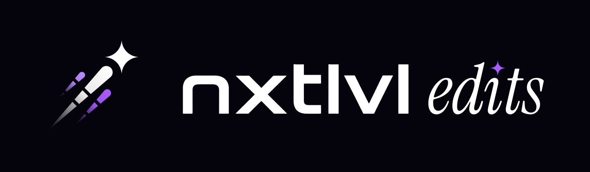
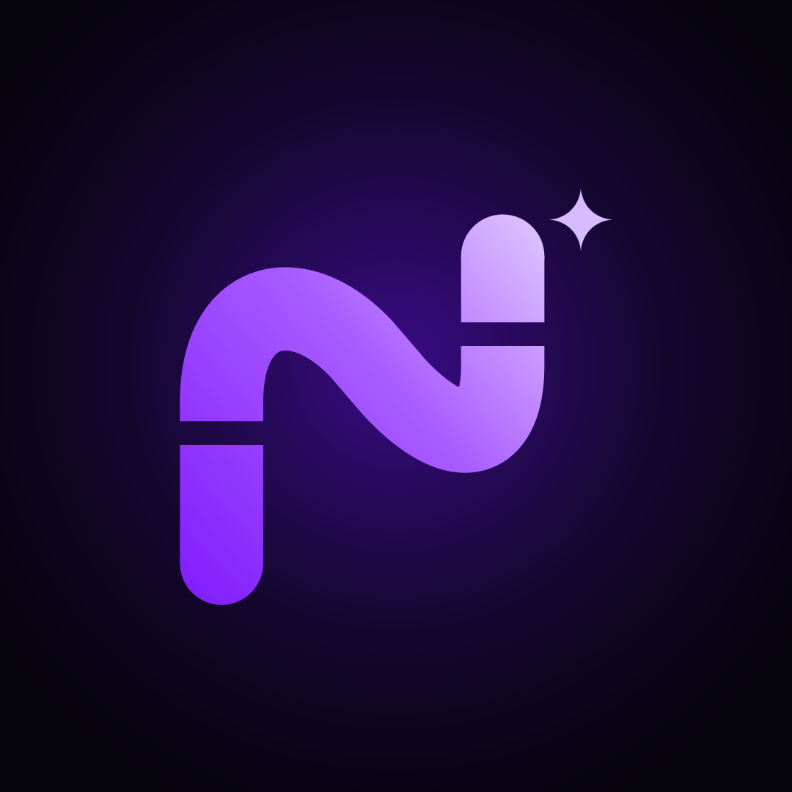
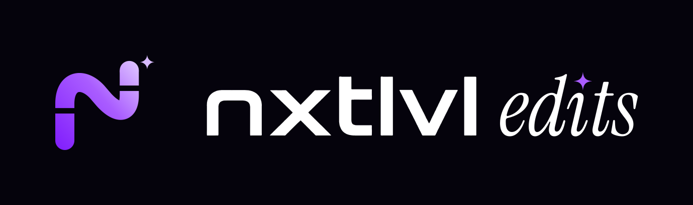
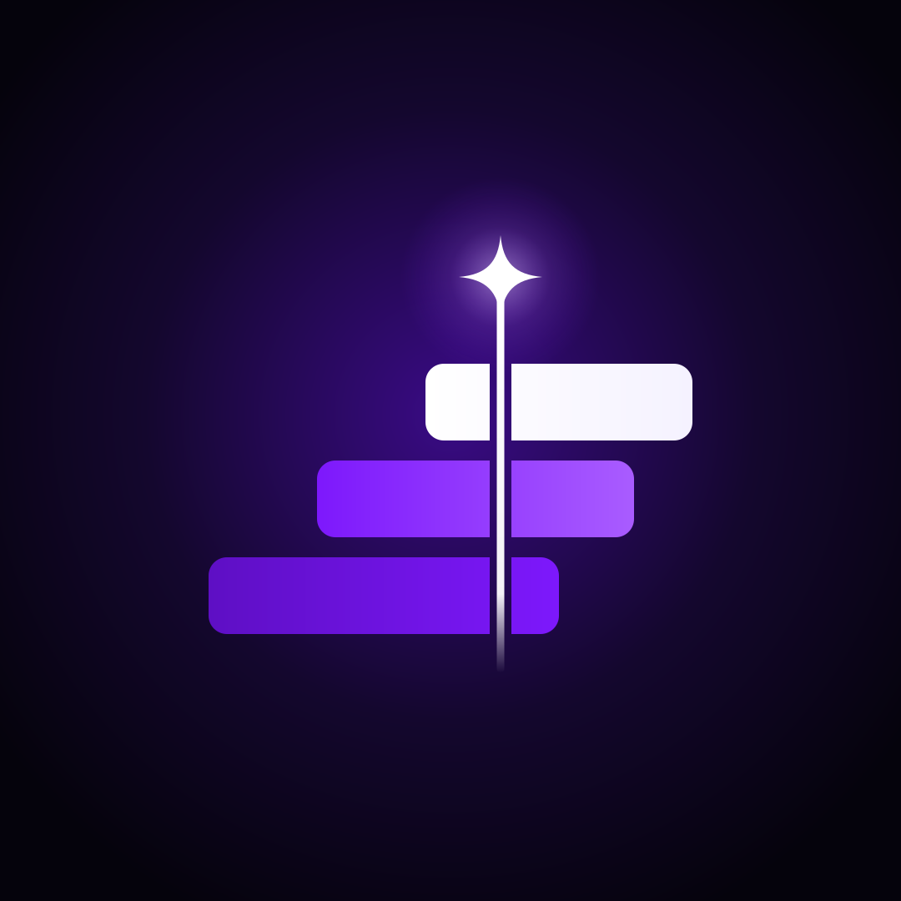
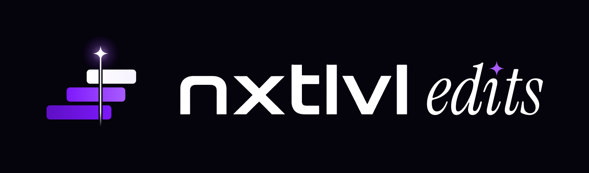
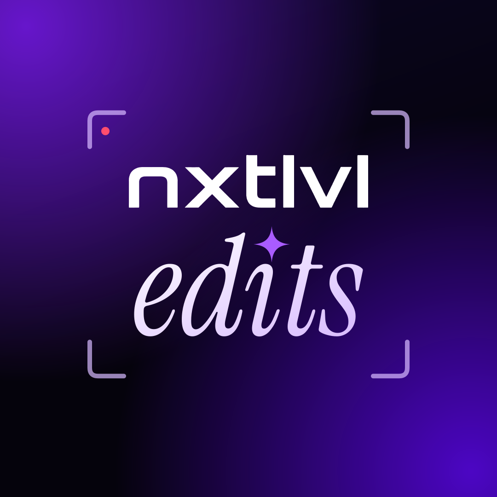
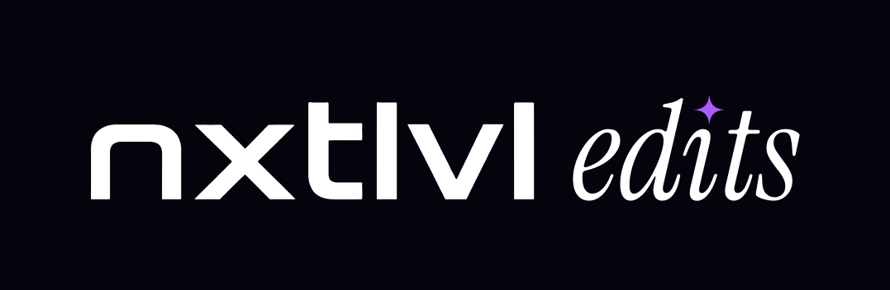

nxtlvl edits · logo concepts
Each one is from the Nxtlvl Social family (the star, the N, the wordmark, the violet), with an editor's cut. Shown as the Instagram profile picture at full size and at the sizes people actually see it.

A
The Nxtlvl Social star, sliced by two razor cuts that run through all three trails, like one cut through every track of a timeline. The closest sibling to the main account.


B
The Smooth N from the Nxtlvl logo, cut into three clips. Same brand, edited.


C
Three clips on a timeline, each track a step higher (the next level), with a star-headed playhead cutting through them. The most "editor" of the four.


D
nxtlvl over edits in the serif from the ad, the i dotted with the star, inside camera viewfinder corners with a REC dot. Says the name outright.
